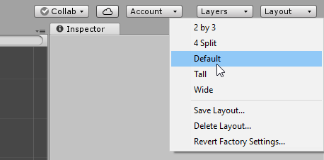
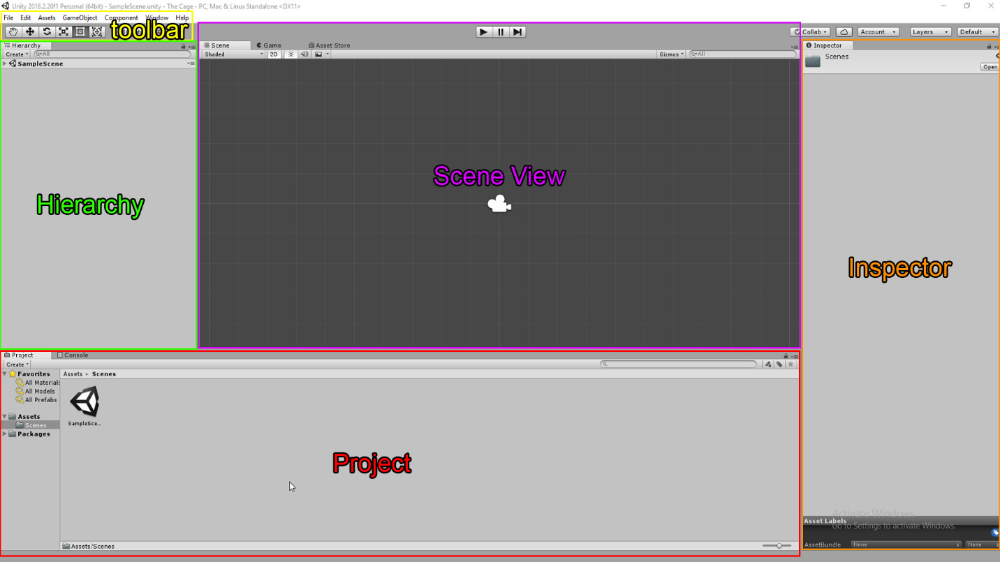
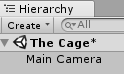
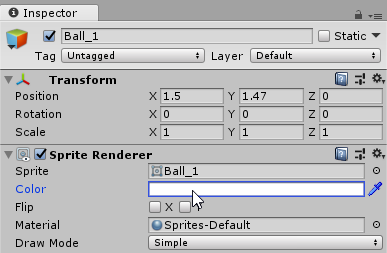
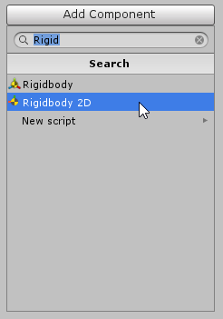
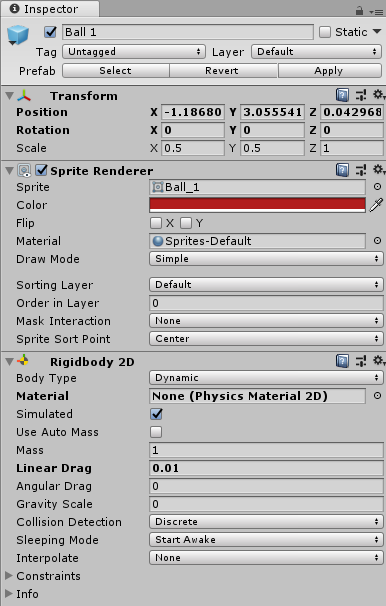
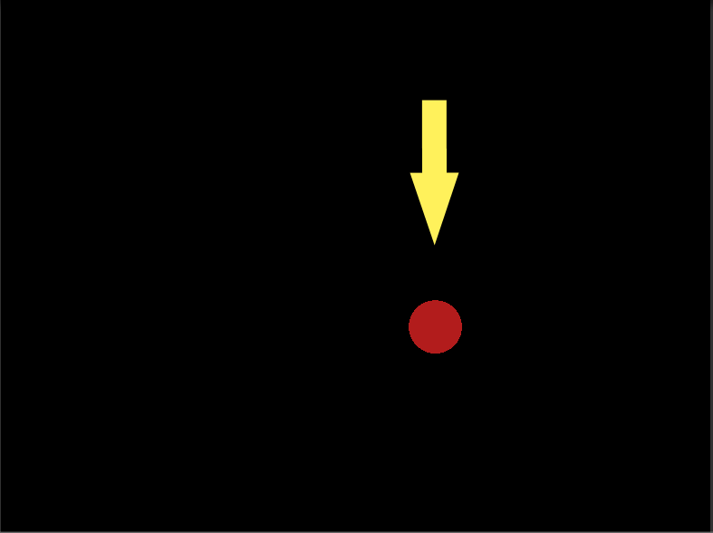
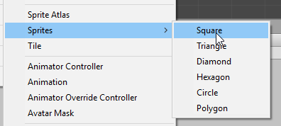

Before we begin, you may have installed Unity Hub instead of a single installation of Unity. For our purposes, there is not difference in the way we will create a new project. Unity Hub has some great additional features that will be discussed later.
For now, click on the Unity icon to get started.
Unity will go through its startup sequence and you will see a screen similar to the one above. You will need to change three of the fields:
* You can use a network drive to store your projects, but it will take longer for Visual Studio to update the scripts in Unity. If you do use a local drive, be sure to back up your work daily as some systems clear out local drives each night.
Do not change the Organization Field.
After clicking on Create Project, the Unity workspace will appear. Unity has a very flexible interface, so what you see may not look exactly like the image above, but we will fix that next by setting our workspace layout to Default.
Click on the button in the top-right titles Layout, and choose Default from the drop-down menu.

Now that we have the default layout, let’s examine the Unity interface.

The Unity interface is divided into 5 main sections or panels:
The toolbar contains the various manipulator tools that we will use to move objects and pan around the Scene View. From left to right, they are the Pan, Move, Rotate, Scale, and Multi-Tool.
The hierarchy panel shows all of the object currently in our scene. You can see that Unity has created a default scene called Sample Scene.
The Project panel shows all of the assets available in our project. The Assets folder mirrors how the files are stored with our project. If you create a folder within Assets called Sprites, a new folder will be created in the project files stored with the current project.
The scene view is where we will place and move the objects so they appear where we want them to when the game starts.
The inspector panel contains all of the editable attributes of the currently selected object in the Hierarchy or Scene View panels.
The first thing we will do is change the name of Sample Scene to something more meaningful for our game. There are several places we can access the current scene, but we will work in the Hierarchy panel for now.
Right-Click on Sample Scene, and choose Rename. Change the scene name to The Cage

You will notice an asterisk next to the scene name. This is telling us that we have unsaved changes in our scene.
Go to the file menu at the top and choose File -> Save Scene, or press CTRL-S (CMD-S on Mac) to save the scene.
We are going to create our first game asset, but first we will start developing the habit of organizing our game assets.
Pro Tip: Organization is essential even in small game projects. It is vital that you develop good habits right away by organizing files in your project panel.
Now that we have our aspectratio fixed and a sprite added to the scene, it’s time to take a closer look at the Inspector panel. As stated above, the Inspector panel contains all of the editable attributes of any selected game object. Let’s start by taking a look at our Ball_1 sprite.
Click on Ball_1 in the Hierarchy or Scene View panels. The Inspector panel will change to show all of hte editable attributes of Ball_1.

Everything we add to our unity project is a game object. At its most basic, a game object has position, rotation, and scale. We can add components to game objects that allow them to fulfill specific roles. The most common is the sprite component that allows the object to be seen during the game. In the next section, we will add a physics component.
Click on the Ball object in the Hierarchy or the Scene View.
In the Inspector panel, you will see the attributes of the sprite. At the bottom of the panel, you will see a button labeled Add Component.
Click on Add Component and a panel will appear.
In the text box at the top, type in Rigid. As you type, you will see options appearing in the Search list below. We want the component called RigidBody 2D.
Do NOT choose RigidBody. RigidBody is a 3D component and will not interact with RigidBody 2D components.
Click on RigidBody 2D.

You will see more information added to the Inspector panel.

Click on the Play Button above the Scene View and see what happens.

Notice that the ball falls straight down and off the screen.
Two things are happening here. The ball is now under the influence of gravity and there’s nothing to stop it from falling through the bottom of the screen.
We’ll deal with gravity later. For now, let’s add another object for the ball to interact with.
Open the Sprites folder in the Project panel.
Right-Click and choose Create->Sprite->Square.

Name the square sprite Wall.
Now we're going to set the position and scale through the Inspector panel. Make sure Wall is selected and enter the following values in the position and scale fields in the object's transform: